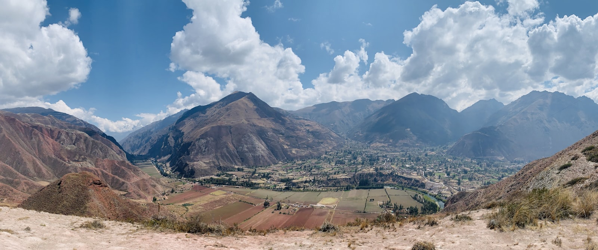
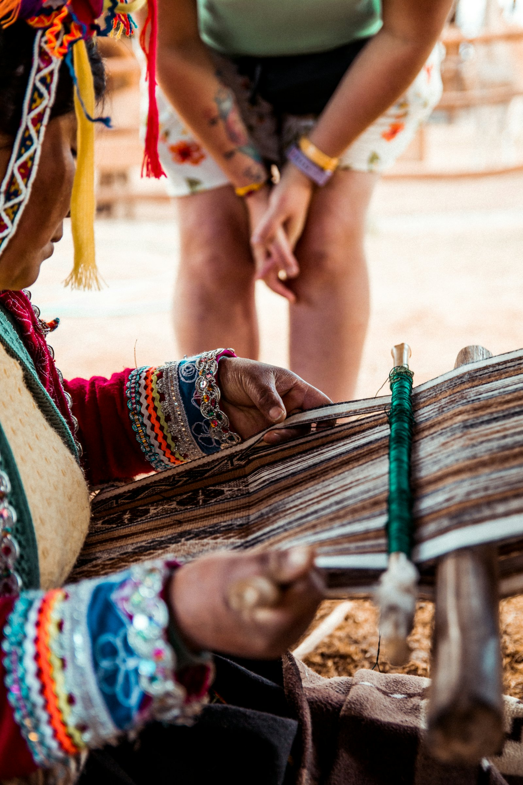
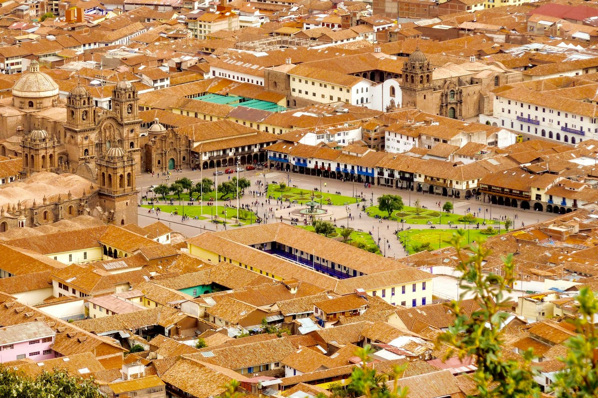
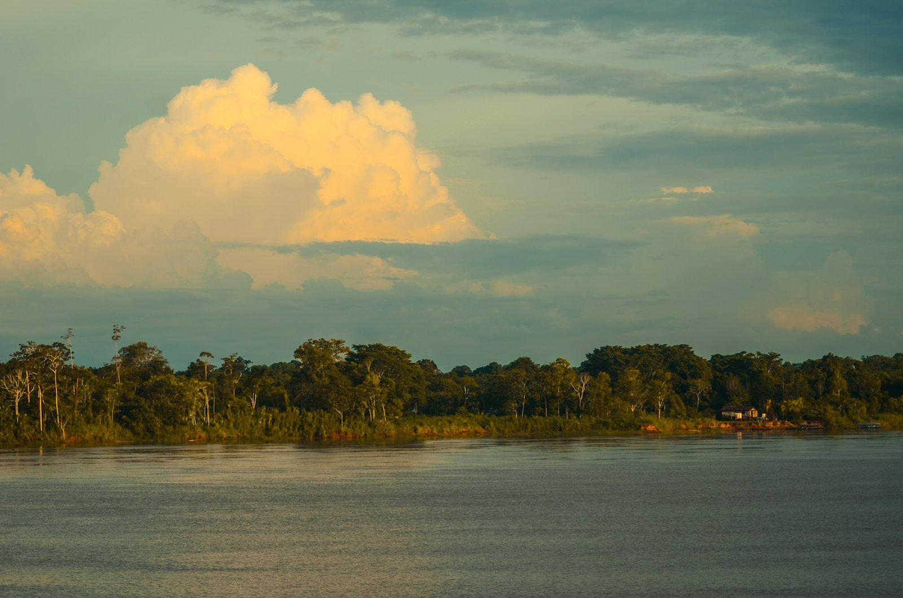
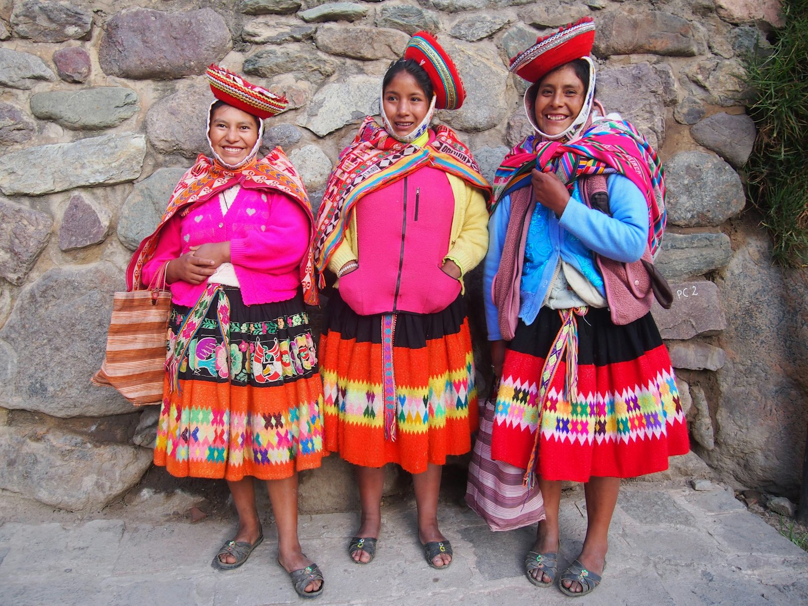
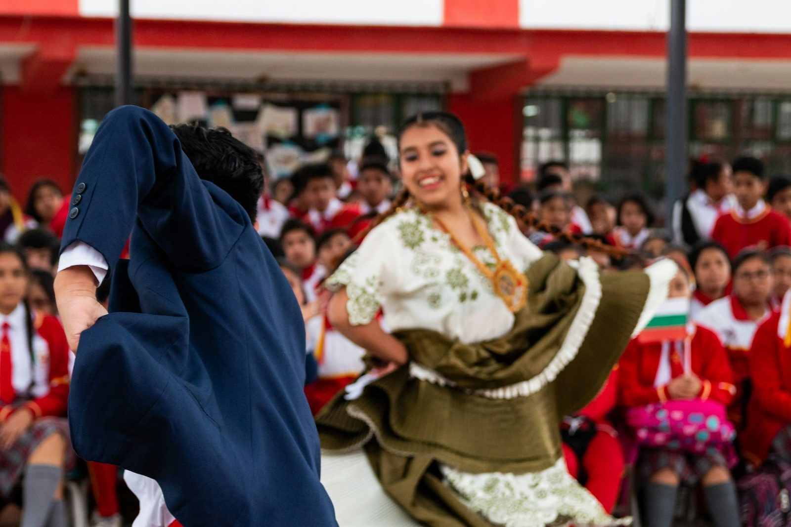
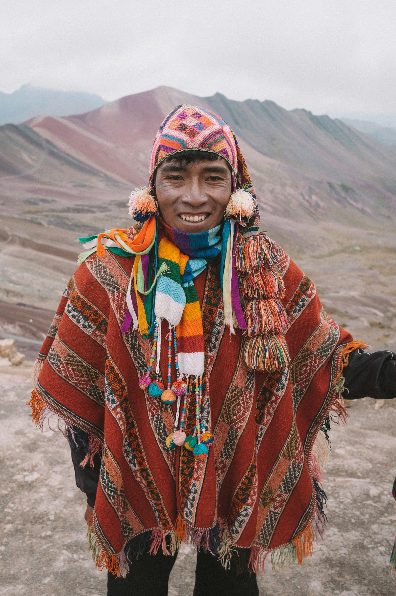

Peru is not a place you visit — it's a place you feel.
Crafted by a Peruvian. Enriched by regular journeys home. Tailored to your budget, your style, your palate. Shared with love.
Perú Crafted Experiences was born from a simple truth: Peru is not a place you visit — it's a place you feel.
I'm Patricia, a Peruvian who has called the UK home for over 20 years. But even after building a life here, my connection to Peru has never faded. I return regularly, staying close to my roots, my family, my friends and the flavours and traditions that shaped me. Each visit deepens my understanding of the country and keeps my relationships with local partners vibrant and alive.
And over time, I realised something powerful: most travellers only ever see the surface of my country. They taste the famous dishes, visit the postcard places, follow the guidebook routes — but they rarely experience the Peru that draws me back again and again.
The Peru of family kitchens and bustling markets. The Peru of hidden towns, artisan hands, and stories passed down through generations. The Peru where food is love, culture is connection, and every journey has soul.
So I created Perú Crafted Experiences to open that world to you. My trips are not mass-produced or pre-packaged. They are crafted, thoughtfully and personally, for each traveller. Whether you dream of a budget-friendly adventure filled with delicious street food and local gems, or a luxury journey with premium hotels, private guides and exclusive culinary experiences, your itinerary is shaped around you.
I work directly with local cooks, guides, drivers, artisans, dancers and families — people I visit often, people I trust, people who carry the true spirit of Peru. Together, we create journeys that feel intimate, warm, and deeply rooted in real Peruvian life.
This is travel that goes beyond sightseeing. This is travel that connects you to people, flavours, traditions, nature and celebration. This is your bespoke Cultural & Gastronomic Journey.
Crafted by a Peruvian.
Enriched by regular journeys home.
Tailored to your budget, your style, your palate.
Shared with love.
The city of kings & kitchens
Most journeys open in Lima — and Lima rewards you. The Plaza de Armas and its cathedral, colonial balconies carved like lace, and the ocean light of Miraflores and bohemian Barranco.
- — The Paso horse, gliding to marinera, a symbol of national pride
- — Colonial balconies and the grandeur of the historic centre
- — Barranco's murals and Miraflores' clifftop tables
- — Sea breezes and fresh ceviche out on La Punta, in Callao
Climbing into the altiplano
From the white city of Arequipa, sillar-stone bright beneath its volcanoes, the road lifts you through the Colca canyon and up onto the high plateau — condors on the morning air, vicuñas on the puna, and Puno waiting on the shore of the great lake.
It is a journey you feel in your breath and your bones: Arequipa, Chivay, the Cruz del Cóndor, and the slow, luminous ascent to the roof of the Andes.
The highest navigable water on earth
An inland sea so vast it meets the sky — shared by two nations, ringed by snow peaks, and alive with cultures who have called its waters home for centuries. Immensity and intimacy, in the same breath.
Immensity, culture & the quiet of the water
Glide out to the Uros, whose islands — and homes, and boats — are woven entirely from totora reed. Step ashore on Taquile, a UNESCO-honoured world of textiles, where knitting is men's work and every garment tells a story. Share a table with a family, and watch the light change over water that seems to have no end.



And yes — your journey can include the wonders
Cusco, the Sacred Valley and Machu Picchu itself — the icons everyone dreams of, woven together with the hidden Peru only a local can open: artisan families, the terraces of Moray, the salt pans of Maras, and mornings when the cloud lifts just for you.
The rainforest touches every sense
Immerse yourself in the world's most biodiverse ecosystem — waking to the sounds of wildlife, tasting rainforest ingredients, drifting along quiet rivers at dusk, and feeling the deep, ancient energy of the jungle. It's a side of Peru that stays with you long after you return.






Paso horses, dancers & the rhythm of marinera
Peru's culture is meant to be felt, not watched from afar — from traditional dancers to the elegance of the Peruvian paso horse, whose rhythmic movements are a symbol of national pride. These are the moments that add magic, emotion and celebration to your journey.